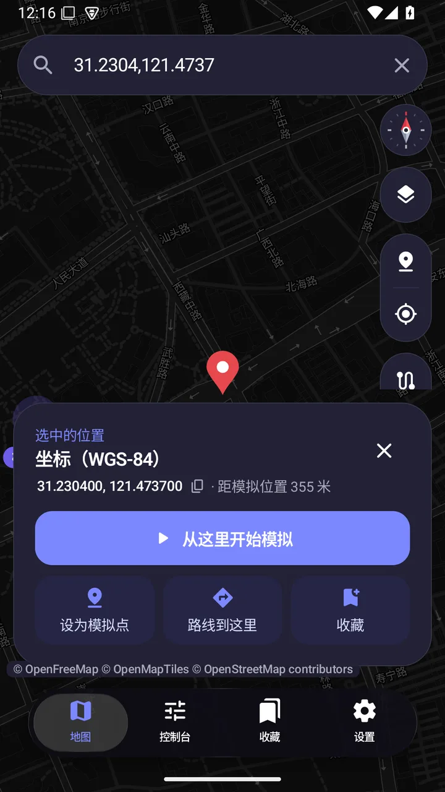
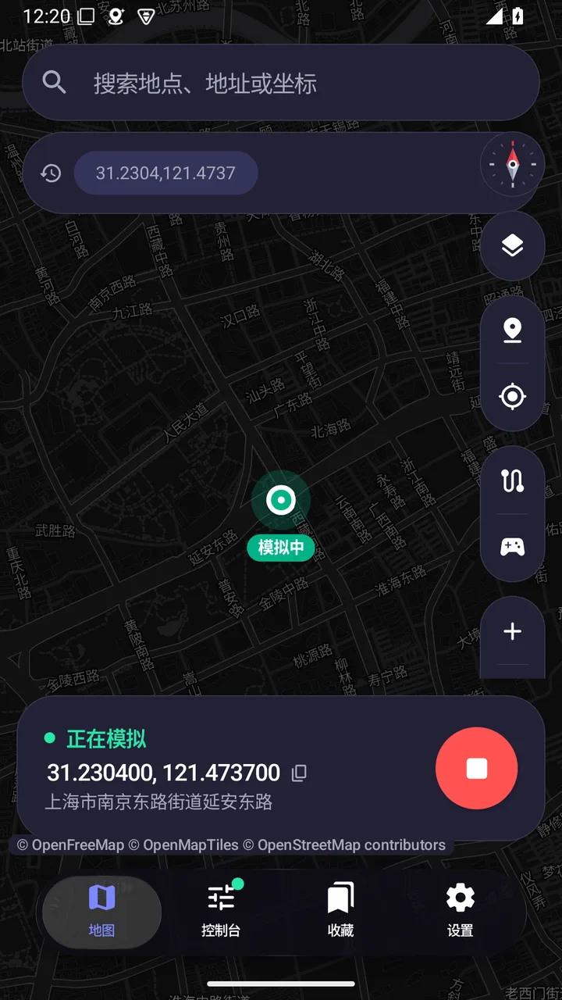

系统级虚拟定位，
不碰你的应用
Geoshift 是 Android 上的 Xposed 模块。定位、卫星、Wi-Fi、基站和蓝牙在系统侧一起替换，不往任何应用里注入代码，全部功能无需任何 Key。


功能
应用能读到的位置线索，
都在系统侧换掉
模块只作用于「系统框架」「电话服务」「蓝牙」三个系统进程。应用收到的回调、缓存位置和卫星状态都是模拟值，且不带模拟标记。
完整的定位链路
gps、network、fused 统一推送；单次定位、PendingIntent、批量回调和谷歌融合定位都返回模拟位置。静止时在几米内平滑漂移，精度和海拔随时间波动。
卫星与 NMEA
GPS、北斗、Galileo、GLONASS 模拟星座，信号强度随仰角变化；NMEA 逐条换成一致的模拟语句，可反推真实位置的原始测量不再下发。
Wi-Fi、基站、蓝牙
Wi-Fi 扫描和连接信息、GSM / LTE / 5G NR 基站换成预设；模拟期间应用扫描不到蓝牙 LE 信标，防止 SDK 用周边设备反查位置。
沿道路路线
步行、骑行、驾车按真实道路连接途经点，也可以纯手选直线。速度可直接填 km/h，起步、转弯、到站减速，可选路口减速与随机红灯。
App 休眠也照常
配置交给系统侧保存，App 熄屏、被冻结甚至被结束，模拟和路线都继续，直到在 App 里停止或重启手机。另有悬浮摇杆。
多种地图，无需 Key
OpenStreetMap、矢量地图、高德瓦片、全球卫星影像随时切换。也可以填自己申请的高德 Android Key，换成官方高德地图、搜索和路线。
上手
四步开始
需要已 Root 的 64 位 ARM 手机：Magisk，或 KernelSU 配合 Zygisk Next。
- 装好 Xposed 框架LSPosed 2.2 及以上（lsposed.zip）或 Vector。LSPosed 1.x 不支持新版 API。
- 安装并启用模块在框架里启用 Geoshift，作用域固定为系统框架、电话服务和蓝牙，不用另外勾选应用。
- 重启手机模块在系统进程里加载，安装和每次更新后都要重启一次。
- 选点，开始模拟在地图上点选或搜索地点，点「从这里开始模拟」。「控制台 → 系统诊断」可查看每一项是否生效。
范围
能伪装什么，不能伪装什么
把边界说清楚，免得踩坑。
系统侧替换
无法伪装
常见问题
常见问题
更多细节见 README。
国内下载很慢或打不开？
「国内加速下载」经第三方 GitHub 代理转发。某条线路不通时，在下载按钮下方换一条「加速线路」再点。下载后可对照页面底部的 SHA-256 确认文件完整。
从 2.x 升级要注意什么？
3.0 起不沿用 2.x 的数据。升级前在 2.x「设置 → 导出备份」，装好新版后「设置 → 导入备份」。框架也要换成 LSPosed 2.2+ 或 Vector。
一定要填高德 Key 吗？
不用。不填时地图、搜索、地址和道路路线使用 OpenStreetMap 体系的公共服务。填了自己申请的高德 Android Key 后，「高德地图」图层改用官方 SDK，搜索和路线也走高德；App 里「设置 → 高德 Key」有分步申请引导。
只想让某几个应用拿到模拟位置？
在「设置 → 模拟范围」改为「仅选中的应用」，其他应用（如导航）继续拿到真实数据。使用谷歌融合定位的应用要同时选中「Google Play 服务」。
GeoProbe 是什么？
独立的探针应用，以普通应用身份读取全部定位线索并显示是否为模拟值，用来验证模块在你的手机上是否完整生效。下载 GeoProbe
支持 32 位手机吗？
当前版本只打包 64 位 ARM（arm64-v8a）。32 位设备可在历史版本里找 3.0.5。
下载 Geoshift v3.5.2
· arm64 · Android 8.0+ · LSPosed 2.2+ / Vector
2b5d7784282f473ebd100b967c7537896bb905fe8fc39c950d84f21f7671363d